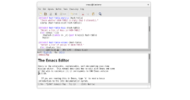

| APORTACIONES |
DESCRIPCIÓN |
IMAGEN |
| Software Libre |
La meta del movimiento es dar libertad a los usuarios de computadoras con software privativo y con licencias restrictivas por un software libre. |
|
| GNU Emacs |
Emacs es un editor de texto con una gran cantidad de funciones, muy popular entre programadores y usuarios técnicos. GNU Emacs es parte del proyecto GNU y la versión más popular de Emacs con una gran actividad en su desarrollo. El manual de GNU Emacs lo describe como "un editor extensible, personalizable, auto-documentado y de tiempo real. |
 |
| GNU Compiler Collection |
Es un conjunto de compiladores creados por el proyecto GNU. GCC es software libre y lo distribuye la Free Software Foundation (FSF) bajo la licencia general pública GPL.Estos compiladores se consideran estándar para los sistemas operativos derivados de UNIX, de código abierto y también de propietarios, como Mac OS X. GCC requiere el conjunto de aplicaciones conocido como binutils para realizar tareas como identificar archivos objeto u obtener su tamaño para copiarulos, traducirlos o crear listas, enlazarlos, o quitarles símbolos innecesarios. |
 |
| GDB |
Es un depurador portable que se puede utilizar en varias plataformas Unix y funciona para varios lenguajes de programación como C, C++ y Fortran. GDB fue escrito por Richard Stallman en 1986. GDB es software libre distribuido bajo la licencia GPL.GDB ofrece la posibilidad de trazar y modificar la ejecución de un programa. El usuario puede controlar y alterar los valores de las variables internas del programa.GDB no contiene su propia interfaz gráfica de usuario y por defecto se controla mediante una interfaz de línea de comandos. |
 |
| GNU Make |
Make es una herramienta de gestión de dependencias, típicamente, las que existen entre los archivos que componen el código fuente de un programa, para dirigir su recompilación o "generación" automáticamente. Si bien es cierto que su función básica consiste en determinar automáticamente qué partes de un programa requieren ser recompiladas y ejecutar los comandos necesarios para hacerlo, también lo es que Make puede usarse en cualquier escenario en el que se requiera, de alguna forma, actualizar automáticamente un conjunto de archivos a partir de otro, cada vez que este cambie. |
 |